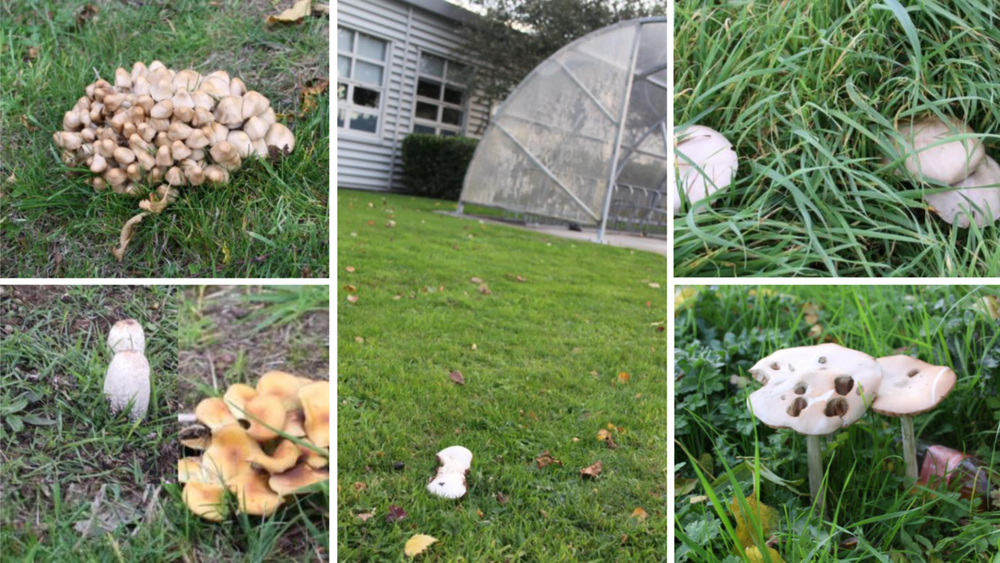
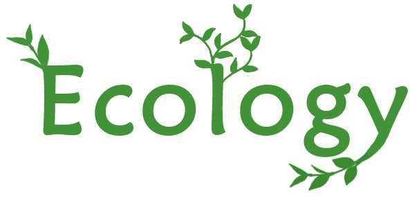
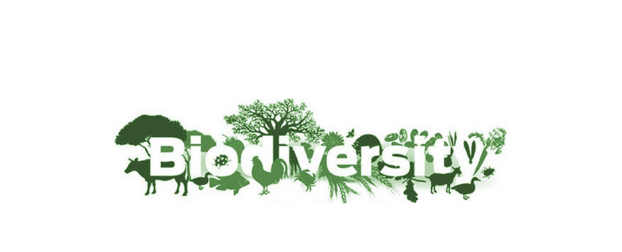
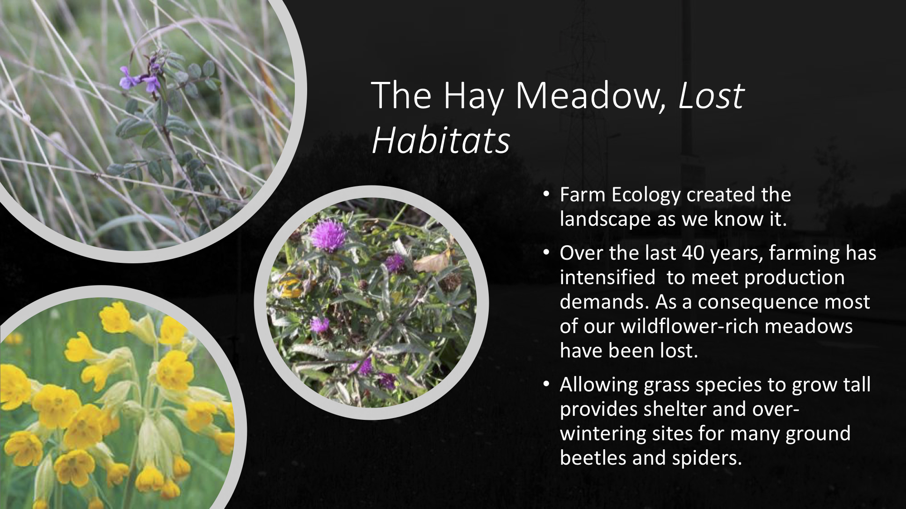
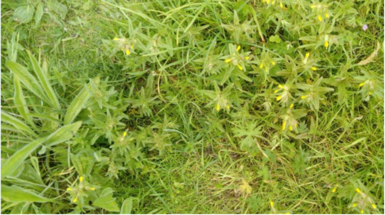
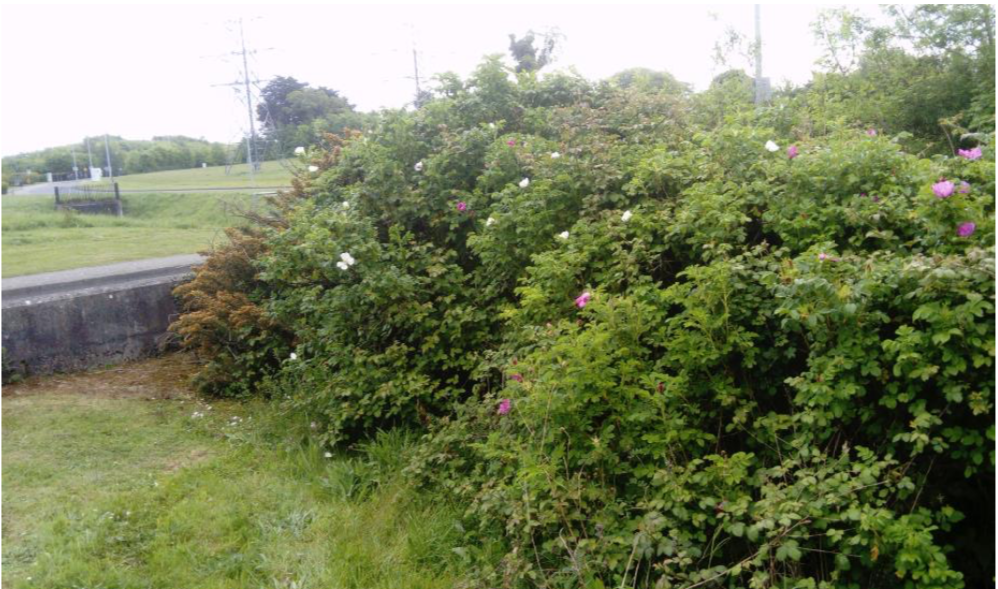

Ecology Definition:
Ecology is a branch of science concerned with the relationships between living things and their environment.
Ecology and Biodiversity
Biodiversity and Ecology at ITB
Both historical and modern, has affected the physical and habitat geography of Ireland and continues to shape it. At ITB there is a particular enphasis on preserving natural habitats within the local area.

Ecology & Biodiversity
What is Ecology and Biodiversity?


Ecology and Biodiversity at ITB

Habitats
ITB campus is an important amenity resource for the local communities, but also provides habitats for many species of flora and fauna.
Buzzards and other predators visit the rough grassland areas to hunt.
Grass
Plant species important to invertebrates
Greaterknapweed(Centaurea scabiosa) support 16 varieties of butterflies, however wild grasses and herbage are required to support the caterpillar stage


Scrubland
Green Oasis - Marginal lands provide shelter and food
Bramble shrub supports:
Blackbirds, thrushes, chaffinches, starlings, robins, foxes, mice and other small mammals eat the fruits.